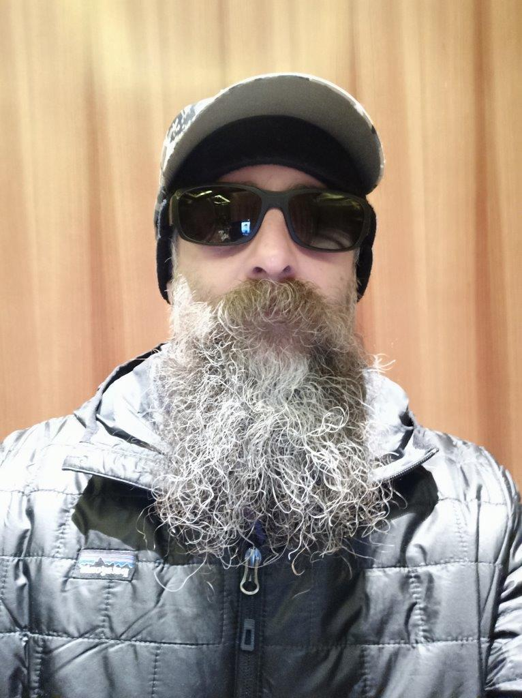

Avatar Styles — Test
Preview of the six avatar border/shadow options using
resources/mes.jpg
.

Option 1
Subtle drop shadow
Option 2
Stronger shadow
Option 3
Thin white ring + shadow
Option 4
Colored ring
Option 5
Soft glow
Option 6
Inset frame
← Back to MerWare Team